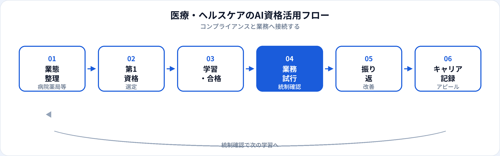

医療・ヘルスケア業界は患者の生命・身体と個人情報が中心にあり、AI活用のハードルは他業界より高いのが現実です。一方、院内文案・研修資料・事務効率化・患者向け説明のたたき台など、機微情報を入力しない範囲では活用の余地が広がっています。本記事では、病院・クリニック・製薬・介護で働く方が取るべきAI資格を業態別・職種別に整理し、2026年6月時点で安全な活かし方とキャリアまで解説します。金融業界向けは別記事、製造業向けは別記事、3資格比較は初心者向け比較も参照してください。
医療・ヘルスケアにAI資格が効く理由
医療現場では、AI導入の議論と個人情報・医療安全の議論がセットになります。資格学習は、「なんとなく使う」から安全な運用ルールと用語の整理へ引き上げる助けになります。
個人情報・要配慮情報の理解
患者情報の取り扱い、匿名化、ログ管理。生成AIパスポートの個人情報・情報管理章が院内ルールづくりの土台になる。
院内事務・教育の効率化
研修資料・手順書・院内通知・説明文案の構成案を速く作り、臨床・ケアに時間を割ける。
医療AI・ヘルステック案件への参画
画像診断支援・創薬・遠隔医療の導入検討で、非エンジニアがリスク説明役として関与しやすくなる。
試験対策はこちら
業態別：病院・クリニック・製薬・介護
| 業態 | AI資格の主な役割 | 試行しやすい業務（例） | 第1候補 |
|---|---|---|---|
| 病院（急性期） | 院内通知・研修資料・事務文案 | 新人研修スライド骨子、部門連絡文案 | 生成AIパスポート |
| クリニック | 患者向け説明文案（一般論）、事務効率化 | FAQ更新案、予約案内文案 | 生成AIパスポート |
| 製薬・医療機器 | 社内資料・規制対応文案の整理 | 比較観点リスト、説明メモのたたき台 | 生成AIパスポート → G検定 |
| 介護・福祉 | 記録文案・家族説明・研修資料 | ケア手順書更新案、職員研修FAQ | 生成AIパスポート |
| ヘルステック | プロダクト説明、リスク記載、利用規約整理 | 機能比較、リリースノート文案 | 生成AIパスポート → G検定 |
職種別の第1候補
| 職種・役割 | 第1候補 | 第二候補（任意） |
|---|---|---|
| 医師・歯科医師 | 生成AIパスポート | G検定（研究・医療AI関与時） |
| 看護師・コメディカル | 生成AIパスポート | —（院内ルール理解が中心） |
| 薬剤師 | 生成AIパスポート | G検定（創薬・分析関与時） |
| 医療事務・クラーク | 生成AIパスポート | ITパスポート |
| 臨床研究・CRC | 生成AIパスポート → G検定 | DS検定リテラシー |
| 情報管理・情シス | 生成AIパスポート → ITパスポート | G検定 |
| 介護職・ケアマネ | 生成AIパスポート | — |
| 管理職・病院経営 | 生成AIパスポート | 管理職向け記事 |
おすすめ資格の比較
| 資格 | 医療・ヘルスケアとの相性 | 学習時間目安 | 向いている担当 |
|---|---|---|---|
| 生成AIパスポート | ◎ 個人情報・文案に直結 | 20〜40時間 | 臨床・事務・介護・管理全般 |
| G検定 | ○ 医療AI・画像・創薬理解 | 80〜150時間 | 研究、ヘルステック、データ分析 |
| DS検定（リテラシー） | ○ 臨床データ・統計の読み方 | 40〜80時間 | 臨床研究、疫学、分析担当 |
| ITパスポート | ○ 電子カルテ・セキュリティ基礎 | 40〜80時間 | 情シス、医療情報管理 |
第1候補と学習順
-
第1：生成AIパスポート（基本）
医療・ヘルスケア現場の第一候補。個人情報・情報管理・ガバナンスを学び、院内文案・研修資料の安全な使い方に接続。
-
第2（研究・ヘルステック）：G検定
医療画像AI・創薬・臨床データ分析・プロダクト開発。医療ドメインと組み合わせてキャリアの差別化に。
-
第2（システム・情報管理）：ITパスポート
電子カルテ・院内ネットワーク・セキュリティ基礎の整理。情シス・医療情報管理担当向け。
医療・ヘルスケアの活用フロー

医療では学習→業務試行→統制確認→振り返りのサイクルが必須です。情報管理室・コンプライアンス・倫理委員会との確認を挟むことが、他業界より重要になります。
業務別：安全な活用シーン
| 業務 | 生成AIの使い方（例） | 入力してはいけない例 |
|---|---|---|
| 院内研修・eラーニング | 問題文・解説文案、FAQ更新案 | 実在患者の症例データ |
| 手順書・マニュアル | 構成案、説明文のたたき台（公開情報ベース） | 未公開の院内プロトコル詳細 |
| 患者向け説明（一般論） | 疾患の一般説明文案、Q&A骨子 | 個別患者の診断・検査値 |
| 事務・受付 | 案内メール文案、問合せFAQ更新案 | 氏名・連絡先・予約詳細 |
| 研究・論文支援 | 英文校正の下書き、構成整理（公開論文ベース） | 未発表の臨床データ |
診断・処方・看護計画・介護判断はAIに委ねません。資格はリテラシーと運用ルールの整理が目的です。
合格後の実践
1か月目
院内AI利用ルール・承認済みツールを確認。資格で学んだ個人情報保護と照合。情報管理・コンプライアンスに相談。
2か月目
低リスク業務1つ（研修資料、院内FAQ等）で試行。必ず担当者が最終確認。
3か月目以降
成果を記録（作成時間短縮、研修効率化等）。第二候補（G検定等）の要否を役割に応じて判断。
医療現場の注意点
| やってよいこと | 避けるべきこと |
|---|---|
| 社内承認済みツールの利用 | 個人の無料AIにカルテ・患者情報を入力 |
| 匿名化した文案・構成案の生成 | AI出力をそのまま診断・処方・看護判断に使用 |
| 情報管理・倫理委員会への事前確認 | 要配慮個人情報の無断入力 |
| 医療従事者による最終確認 | 「資格があるから」院内規定・医療安全を無視 |
医療AIは高リスクAIとして議論される場面もあります。院内規定と最新の法規制を優先してください。
キャリア・転職でのアピール
社内評価・専門職キャリア
例：「生成AIパスポート（2026年○月）取得。情報管理室確認のうえ、新人看護師向け研修資料作成時間を40%短縮。」
医療では資格＋コンプライアンス遵守＋業務成果のセットが説得力を生みます。記載例は履歴書ガイドを参照。
ヘルステック・医療AI職へのキャリアチェンジ
医療ドメイン＋G検定＋研究・開発実績の組み合わせは強み。AIエンジニア、データサイエンティストの記事も併読。
他業界から医療へ
AIリテラシーは補完になります。医療の専門性は資格（看護師・医師等）・OJTで別途積み上げる必要があります。
資格だけでは足りない点
医療の評価は患者安全・倫理・コンプライアンスです。資格はリテラシーと学習意欲の証明になりますが、臨床判断・ケア・医療倫理は現場で培う領域です。合格後は、情報管理・コンプライアンスと連携しながら小さく試すことを優先してください。
よくある質問
医療・ヘルスケアにおすすめのAI資格はどれ？
多くの現場では生成AIパスポートが第一候補。医療AI・研究担当はG検定やDS検定も検討。
医師・看護師でも取る価値はある？
あります。安全な使い方と用語整理に直結。臨床判断の最終責任は医療従事者が担い、事務・教育から試すのが現実的。
患者情報やカルテをAIに入力してよい？
原則入力しない。氏名・病歴・検査値は個人情報。匿名化した文案生成に限定。
G検定は医療業界で必要？
必須ではない。臨床・事務・介護なら生成AIパスポートで十分なことが多い。医療AI・創薬・研究担当はG検定の価値が上がる。